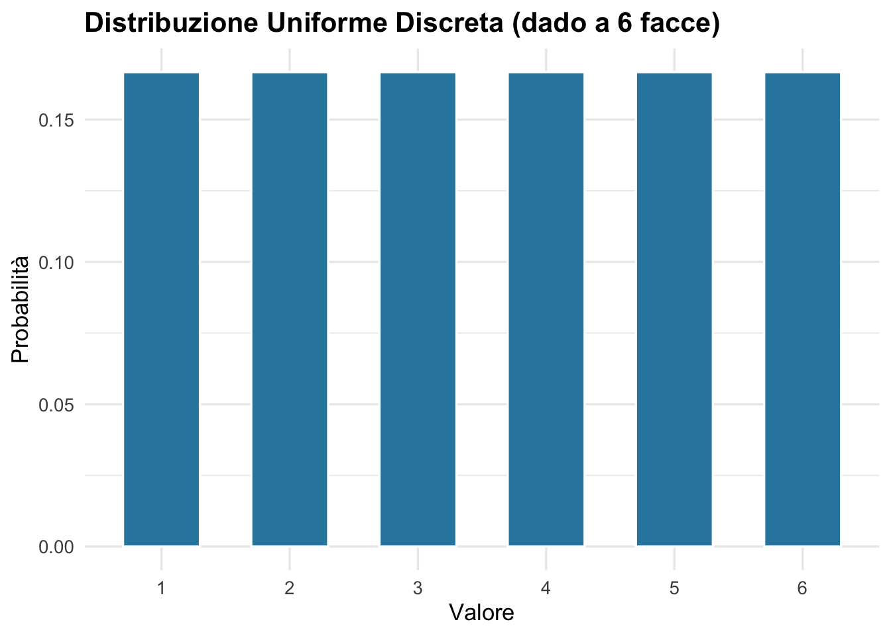
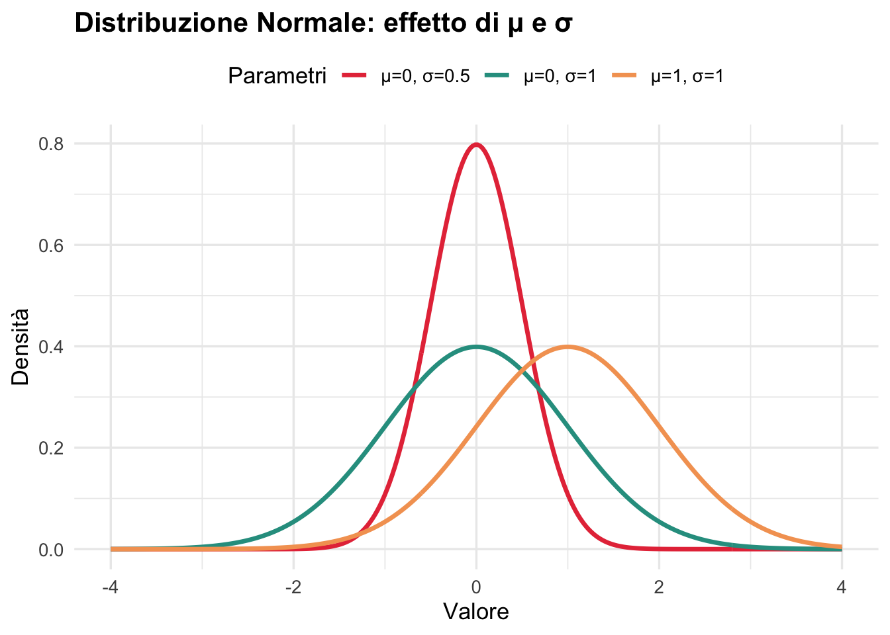
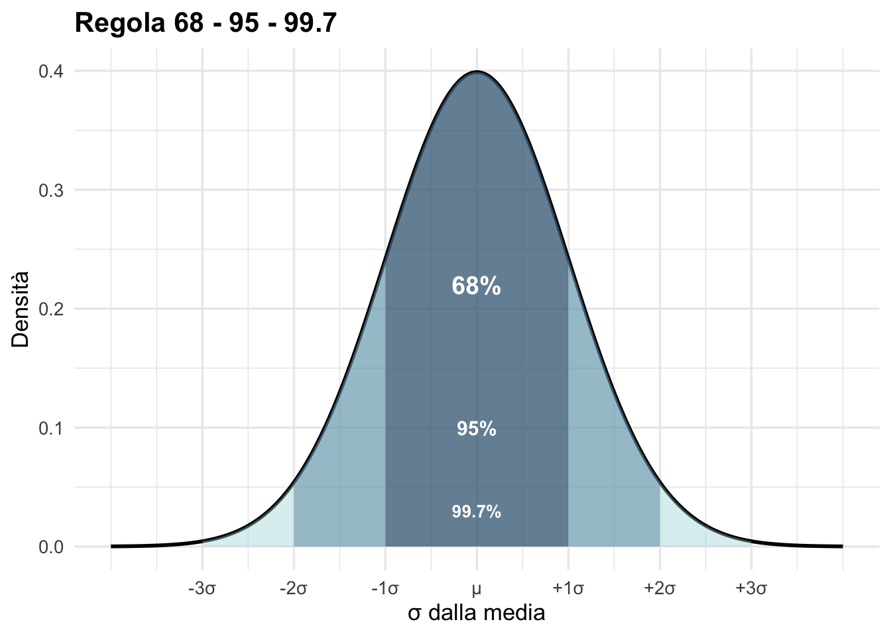
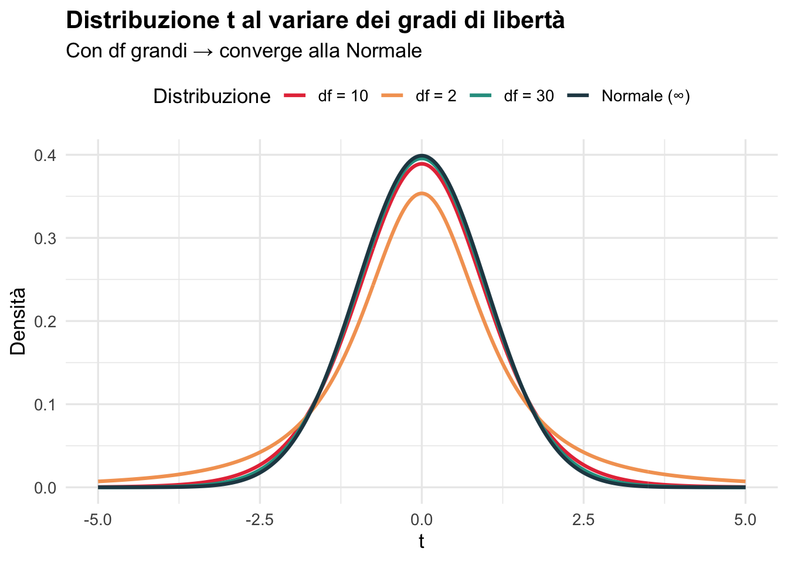
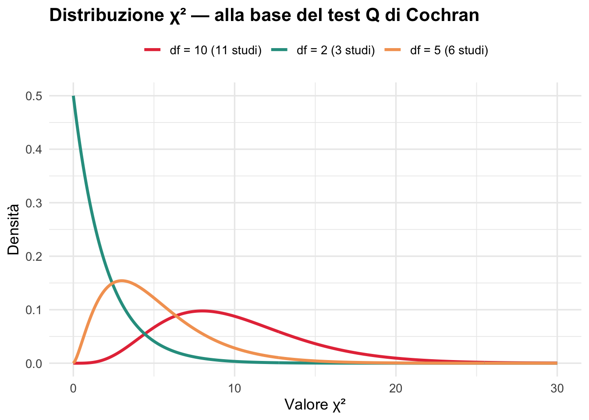

Prima di capire la meta-analisi, dobbiamo parlare la stessa lingua della statistica. Questo notebook copre le distribuzioni di probabilità e i concetti che tornano continuamente nei metodi di sintesi della letteratura.
1️⃣ Cosa è una Distribuzione di Probabilità?
Una distribuzione descrive come si distribuiscono i valori in una popolazione o in un campione. In meta-analisi, ogni studio produce un effect size (misura dell’effetto): la distribuzione ci dice quanto variabile è quella stima.
# Esempio: distribuzione discreta (lancio di un dado)valori <-1:6probabilita <-rep(1/6, 6)df_dado <-data.frame(x = valori, p = probabilita)ggplot(df_dado, aes(x =factor(x), y = p)) +geom_col(fill ="#2E86AB", color ="white", width =0.6) +labs(title ="Distribuzione Uniforme Discreta (dado a 6 facce)",x ="Valore", y ="Probabilità" ) +theme_minimal(base_size =13) +theme(plot.title =element_text(face ="bold"))

2️⃣ La Distribuzione Normale (Gaussiana)
La distribuzione più importante in statistica. In meta-analisi assume un ruolo centrale: gli effect sizes, con campioni sufficientemente grandi, seguono una distribuzione approssimativamente normale.
\[X \sim \mathcal{N}(\mu, \sigma^2)\]
\(\mu\) = media (centro della curva)
\(\sigma\) = deviazione standard (larghezza della curva)
# Confronto di normali con diversi parametrix <-seq(-4, 4, length.out =300)df_norm <-bind_rows(data.frame(x = x, y =dnorm(x, 0, 1), label ="μ=0, σ=1"),data.frame(x = x, y =dnorm(x, 0, 0.5), label ="μ=0, σ=0.5"),data.frame(x = x, y =dnorm(x, 1, 1), label ="μ=1, σ=1"))ggplot(df_norm, aes(x = x, y = y, color = label)) +geom_line(linewidth =1.2) +scale_color_manual(values =c("#E63946", "#2A9D8F", "#F4A261")) +labs(title ="Distribuzione Normale: effetto di μ e σ",x ="Valore", y ="Densità", color ="Parametri" ) +theme_minimal(base_size =13) +theme(plot.title =element_text(face ="bold"),legend.position ="top")

💡 Perché importa in meta-analisi? Gli effect sizes stimati da studi grandi si distribuiscono normalmente attorno al vero effetto nella popolazione — questo è il fondamento matematico che giustifica i modelli fixed e random effects.
3️⃣ La Regola 68-95-99.7
Una proprietà fondamentale della normale: quanto dell’area cade entro 1, 2, 3 σ?
x <-seq(-4, 4, length.out =1000)y <-dnorm(x)df <-data.frame(x = x, y = y)ggplot(df, aes(x, y)) +geom_line(linewidth =1) +geom_area(data =filter(df, x >=-3& x <=3),aes(y = y), fill ="#A8DADC", alpha =0.4) +geom_area(data =filter(df, x >=-2& x <=2),aes(y = y), fill ="#457B9D", alpha =0.4) +geom_area(data =filter(df, x >=-1& x <=1),aes(y = y), fill ="#1D3557", alpha =0.4) +annotate("text", x =0, y =0.22, label ="68%", color ="white",fontface ="bold", size =5) +annotate("text", x =0, y =0.10, label ="95%", color ="white",fontface ="bold", size =4) +annotate("text", x =0, y =0.03, label ="99.7%", color ="white",fontface ="bold", size =3.5) +labs(title ="Regola 68 - 95 - 99.7",x ="σ dalla media", y ="Densità") +scale_x_continuous(breaks =-3:3,labels =c("-3σ","-2σ","-1σ","μ","+1σ","+2σ","+3σ")) +theme_minimal(base_size =13) +theme(plot.title =element_text(face ="bold"))

🧠 Connessione pratica: il valore 1.96 (≈2σ) usato per i confidence intervals al 95% derive direttamente da questa proprietà della distribuzione normale.
4️⃣ Distribuzione t di Student
Con campioni piccoli, la distribuzione normale non è abbastanza precisa. La distribuzione t ha code più pesanti (più incertezza) e converge alla normale all’aumentare dei gradi di libertà (df).
x <-seq(-5, 5, length.out =300)df_t <-bind_rows(data.frame(x = x, y =dt(x, df =2), gradi ="df = 2"),data.frame(x = x, y =dt(x, df =10), gradi ="df = 10"),data.frame(x = x, y =dt(x, df =30), gradi ="df = 30"),data.frame(x = x, y =dnorm(x), gradi ="Normale (∞)"))ggplot(df_t, aes(x = x, y = y, color = gradi)) +geom_line(linewidth =1.1) +scale_color_manual(values =c("#E63946","#F4A261","#2A9D8F","#264653")) +labs(title ="Distribuzione t al variare dei gradi di libertà",subtitle ="Con df grandi → converge alla Normale",x ="t", y ="Densità", color ="Distribuzione" ) +theme_minimal(base_size =13) +theme(plot.title =element_text(face ="bold"),legend.position ="top")

💡 In meta-analisi: la distribuzione t appare nel calcolo dei confidence intervals quando il numero di studi è piccolo (tipicamente < 30).
5️⃣ Distribuzione Chi-Quadro (χ²)
Usata per testare l’eterogeneità tra studi: la statistica Q di Cochran segue una distribuzione χ² con (k-1) gradi di libertà, dove k = numero di studi.
x <-seq(0, 30, length.out =300)df_chi <-bind_rows(data.frame(x = x, y =dchisq(x, df =2), df ="df = 2 (3 studi)"),data.frame(x = x, y =dchisq(x, df =5), df ="df = 5 (6 studi)"),data.frame(x = x, y =dchisq(x, df =10), df ="df = 10 (11 studi)"))ggplot(df_chi, aes(x = x, y = y, color = df)) +geom_line(linewidth =1.2) +scale_color_manual(values =c("#E63946","#2A9D8F","#F4A261")) +labs(title ="Distribuzione χ² — alla base del test Q di Cochran",x ="Valore χ²", y ="Densità", color =NULL ) +theme_minimal(base_size =13) +theme(plot.title =element_text(face ="bold"),legend.position ="top")

🧩 Riepilogo: Quale distribuzione, quando?
Distribuzione
Quando la usi in meta-analisi
Normale
Effect sizes con grandi campioni, z-test
t di Student
IC con pochi studi (k < 30)
χ² (Chi-quadro)
Test Q di Cochran per l’eterogeneità
F di Fisher
ANOVA nelle subgroup analyses
🏁 Esercizi
# ESERCIZIO 1# Calcola la probabilità che una variabile N(0,1) sia > 1.96p1 <-pnorm(1.96, lower.tail =FALSE)cat("P(Z > 1.96) =", round(p1, 4), "\n")
P(Z > 1.96) = 0.025
# → Dovrebbe essere ≈ 0.025 (coda destra al 95%)# ESERCIZIO 2# Quant'è il valore critico t con df=9 al 95% (due code)?t_crit <-qt(0.975, df =9)cat("t critico (df=9, 95%) =", round(t_crit, 3), "\n")
t critico (df=9, 95%) = 2.262
# → Confronta con z = 1.96: le code pesanti della t allargano l'IC!# ESERCIZIO 3# Se Q = 18.5 con 7 studi (df=6), il p-value del test di eterogeneità è:p_Q <-pchisq(18.5, df =6, lower.tail =FALSE)cat("p-value test Q (df=6) =", round(p_Q, 4), "\n")
p-value test Q (df=6) = 0.0051
# → Se p < 0.10: eterogeneità statisticamente significativa
➡️ Prossimo Notebook
02_stima_e_inferenza.qmd — Media, varianza, errore standard e intervalli di confidenza: i mattoni per costruire ogni effect size.